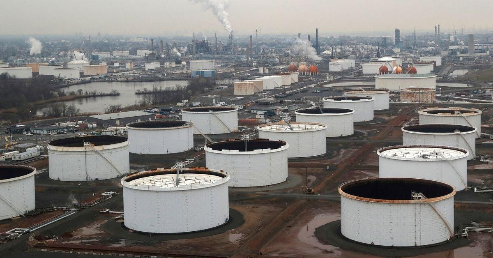

Column: Crude oil and fuels draw funds as sentiment shiftsLONDON, Aug 7 (Reuters) - Crude oil prices continued to climb as Saudi Arabia’s decision to extend its unilateral production cuts and signs of decelerating inflation and a soft landing in the United States improved sentiment among investors. Hedge funds and other money managers purchased the equivalent of 51 million barrels in the six most important petroleum futures and options contracts over the seven days ending on Aug. 1. Fund managers had purchased a total of 280 million barrels over the five weeks since June 27, according to position reports filed with ICE Futures Europe and the U.S. Commodity Futures Trading Commission. The total position climbed to 563 million barrels (46th percentile for all weeks since 2013) on Aug. 1, up from just 282 million barrels (5th percentile) on June 27. Bullish long positions outnumbered bearish short ones by a ratio of 4.31:1 (54th percentile) up from 1.95:1 (10th percentile) five weeks earlier. The most recent week saw a significant number of new bullish long positions initiated (+37 million barrels) as well as former bearish shorts closed out (-14 million). Chartbook: Petroleum and gas positions The very bearish sentiment gripping the oil market at the end of June has evaporated after additional output cuts from Saudi Arabia and its OPEC+ allies and hopes easing inflation will allow central banks to stop raising interest rates. If implemented in full, extra cuts announced by Saudi Arabia and Russia would remove a further 115 million barrels from the market between July and September. Traders anticipate the extra cuts, coupled with signs interest rates are peaking, will limit any build of inventories in the final four months of the year and result in stocks depleting instead. Front-month Brent futures prices climbed almost $13 per barrel (18%) over the five weeks ending on Aug. 1 as the outlook shifted to a production deficit from a surplus. While crude inventories remain above the long-term average, fuel inventories are well below, especially for diesel and other middle distillates. The result has been persistent position-building in fuel contracts, as portfolio managers anticipate any acceleration of growth in the United States and other major economies will quickly translate into tight fuel supplies. In the most recent week, funds were buyers of European gas oil (+20 million barrels), Brent (+19 million), U.S. gasoline (+6 million), U.S. diesel (+4 million) and NYMEX and ICE WTI (+3 million). Net positions in U.S. gasoline (82nd percentile), U.S. diesel (77th percentile) and European gas oil (67th percentile) are all well above the ten-year average, anticipating future tightness of fuel supplies. U.S. NATURAL GAS In contrast to oil, fund managers sold U.S. natural gas futures and options as hopes for a quick depletion of surplus inventories receded. Hedge funds and other money managers sold the equivalent of 307 billion cubic feet of gas over the seven days ending on Aug. 1. The net position dropped to 415 billion cubic feet (41st percentile) from 723 billion cubic feet (47th percentile) on July 25 and the lowest for five weeks. U.S. gas production has continued to climb, reaching a record in May 2023, the lagged effect of very high prices for oil and gas in the second and third quarters of 2022 following Russia’s invasion of Ukraine. Working inventories in underground storage were still +222 billion cubic feet (+8% or +0.67 standard deviations) above the prior ten-year seasonal average on July 28. The surplus had narrowed only slightly from a recent high of +299 billion cubic feet (+12% or +0.81 standard deviations) at the end of June. In real terms, front-month futures prices are in only the 6th percentile for all months since 1990, so the balance of risks is tilted to the upside and many investors are keen to become more bullish. But the surplus is proving slow to deplete, causing some retreat in positioning after consistent builds in previous weeks. Related columns: - U.S. oil and gas production begins to flatten (August 4, 2023) - Short-covering by hedge funds lifted oil prices (August 1, 2023) - Depleted U.S. diesel stocks attract hedge funds (July 20, 2023) - Saudi output cut entices funds back into oil market (July 17, 2023) John Kemp is a Reuters market analyst. The views expressed are his own Our Standards: The Thomson Reuters Trust Principles. |
 |